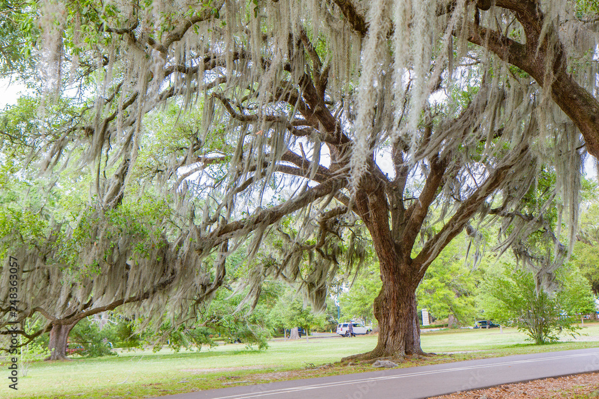

Errands
April 8, 2026
At night, we played partners in crime on Bourbon Street.
A Voodoo Daiquiri sweating on the table, your hands at my waist.
Loud laughter, beads clinking and a half-dead jazz piano.
The next day, we paused beneath haunted live oaks,
their white catkins like farewell hankies drifting in the wind.
Like meaningless shreds of memories dissolved in the air.
We wandered for hours inside the bayous, and their snaky waters.
No beginning, no end – unlike our time together,
threatened from the very start by an abrupt ending.
Our last walk took us through NOLA’s cemetery.
Now we belong to those proud tombs that guard the never-returning.
Had I known, I would have laid flowers in tribute to that time.
· · ·
Context & Notes
A poem in tribute to the relationship with A. ending unexpectedly after a week-end to New Orleans. The poem explores themes of death and loss, which, in retrospective, might have already been haunting the two characters during their journey.
Previous Versions
August, 2025
At night, we played partners in crime on Bourbon Street,
A Voodoo Daiquiri on the table, your hands around my waist.
Loud laughs and smiles, a jazz piano playing half-dead.
The next day, we stopped beneath the haunted live oaks
Their white hanging catkins like farewell hankies in the wind.
Meaningless tatters ready to dissolve our memories in the air
We spent a few hours wandering inside the bayous.
Their meandering waters, bearing no beginning, no end.
Unlike our story, which from the start bore the shadow of its own end.
Our last walk led us through NOLA's cemetery.
Now we belong too to those proud tombs that guard the never-returning.
Had I known, I would have laid flowers in tribute to that time.
Comments
If this poem stirred something in you, share a thought below.